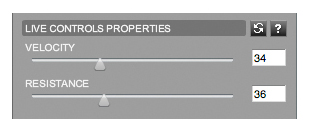
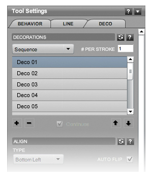

Online Documentation
Brush Styles
Overview
We're excited to see the work you create using the styles included with Livebrush. But at some point you may want or need to change a style to satisfy your own creative appetite. This section contains all the information you need to get started customizing and creating your own brush styles. But first, here's a quick primer.
Use the styles panel to select a style. Now, open the tool settings panel (if it's not already open). When using the brush tool, the Tool Settings panel displays settings for the selected style. These settings are divided into three categories: behavior, line, and decoration.
In Livebrush, use the brush tool in combination with brush styles. These styles affect how the brush behaves and how the resulting line looks. A brush behaves according to the behavior settings of the currently selected style. How your line looks is based on the line and decoration settings of the currently selected style.
All the visual settings of a brush style follow a consistent structure. They are constraints designed to dynamically change how the line looks as you draw. The amount of change is specified by a minimum and maximum value, or a list of values. There are many ways this change can occur. For example, you can have the line width change based on how fast you're drawing. These types are discussed for each setting in the line and deco sections.
Similarly, a brush behaves differently based the behavior constraints. For example, if you want the brush to swing loose around your cursor, you'd increase its velocity and lower its friction. The details of these types are discussed in the style behavior section.
The style behavior also includes settings that specify when decorations should be added to the line. But unlike the visual constraints, these settings act more like thresholds. In other words, you are specifying various drawing conditions that need to be met in order for a decoration to be attached.
That's all for the basics. If it seems like a lot, don't think about it too much. Experiment with various settings and click the help buttons when needed. If it's still confusing, let us know. It's most likely our fault. It's not you, it's me.
And remember to use the style preview window.
Back to top | More help
Behavior
As you draw, utilize style behavior settings to specify how a brush will react and when decorations should be attached to your line.
Continue reading to learn how each of these settings affects the brush tool.
Behavior Type
The behavior type can be one of three options:
- Normal: Instructs the brush to follow your drawing input precisely.
- Live: Instructs the brush to combine your input with velocity and friction settings.
- Dynamic: Instructs the brush to use a dynamic input SWF.
Live Controls

The live controls are enabled when you are using the Live input behavior type.
- Velocity: Increase this setting to give your brush more speed when drawing. The effect of this is most obvious when you stop drawing; the brush will keep moving.
- Friction: Increase this setting to slow your brush speed when drawing. Without this setting, a brush would keep moving indefinitely. Combining velocity with friction gives your brush an elastic feel.
- Mouse Up Complete (only with Live behavior type): When checked, the brush will stop immediately regardless of the velocity or friction settings.
Deco Thresholds
These settings are enabled when there is at least one deco in the current styles' deco list. While drawing, these settings instruct the brush when to add decorations to a line. In other words, a threshold is a setting that specifies drawing conditions that must be met in order for a decoration to be attached. These conditions can be a minimum or maximum value.
In most cases, a minimum and a maximum value can be used together. This allows a decoration to be added when drawing conditions are greater than the minimum, but lower than the maximum. Also note that most thresholds use values that are generated by other style settings. This offers some interesting ways to link and synchronize various effects.
These thresholds (listed below) are checked for every point added to your line. If the condition is met, one or more decorations will be added to the line at the current brush position.
- Draw Speed: Add deco(s) if your draw speed is greater than the min, but less than the max value. Note that your actual draw speed is always restricted by the draw speed setting.
- Line Width: Add deco(s) if your line width is greater than the min, but less than the max value.
- Line Angle: Add deco(s) if the direction of your gesture is greater than the min, but less than the max value.
- Distance: Add deco(s) if the distance since your last deco is greater then the min, but less than the max value.
- Random: Add deco(s) randomly. The greater the max value, the less likely a deco will be attached.
- Interval: Continuously add deco(s) every X seconds, where X is a period of time specified in seconds.
These thresholds specify WHEN a decoration should be added to a line. Refer to the deco style settings for information regarding HOW they are added.
Draw Speed

This setting provides a way to limit brush movement. The brush will add points to the line if your actual draw speed is greater than the minimum and less than the maximum value (speed is measured in pixel-per-frame*).
The maximum value is also important because it offers a way to adjust the responsiveness of other style settings that use brush speed as their input type. In other words, the greater the max draw speed, the faster you'll have to move in order to max out those other brush-speed-dependant settings.
For example, suppose you set the maximum draw speed to 25. And in the same style, you've set your line width type to be between 10 and 85 based on how fast you're drawing. As you draw, the brush will create line widths between 10 and 85 by calculating a percentage between your actual draw speed and the maximum draw speed (25). And since Livebrush has no control over how fast you're actually moving, subtle gestures would quickly reach this 25 pixel* max speed.
Now pretend your maximum draw speed is 150. You'd be able to exercise a much greater range of draw speeds. And it would take a much faster movement for the brush to reach the maximum line width.
For the best results, keep the maximum draw speed between 75 and 200. If you're using a style created by someone else, it's best to leave this setting. Changing it may cause the style look and behave differently from what was intended.
* Your draw speed is measured by determining the number of pixels moved roughly 30 times per second.
Lines
As you draw, line style settings tell the brush how your line should look at each point.
However, there are some settings that can only be applied to the whole line. The Line Type and Stroke Type settings do not change as you draw. These settings are consistent for all points in a line. Furthermore, these are the only line properties that change when you apply or convert a line to another style after it has been drawn.
Continue reading to learn how each of these settings affects the look the brush.
Line Type
The Line Type setting simply specifies if the line should be smooth or straight.
Note that a line can be converted between these settings after it has been drawn.
Stroke Type
The Stroke Type setting can be one of four values:
- Solid: Strokes are solid shapes connected together.
- Rake: Strokes are a series of little lines connected together. With this type, two other settings are enabled. The number of rake lines and their weight. Note that the weight applies to all rake lines.
- Path: Strokes are a single line.
- None: No stroke is drawn. The line data will be stored. But unless there are decos to attach, this line will be completely invisible (except when using the transform tool).
Note that a line can be converted between these settings after it has been drawn.
Line Width
This setting uses a minimum, maximum and speed value. While drawing, a width is generated from these values based on the type setting.
Types:
- Fixed: This type instructs the brush to use the minimum input value for the width.
- Draw Speed: This type uses the draw speed to generate a width between the minimum and maximum values.
- Oscillate*: This type generates a width that starts at the minimum value. As you draw, it increases using the speed until it reaches the maximum. It then decreases using the speed until it reaches the minimum. And then begins the cycle again.
- Random: This type randomly generates a width between the minimum and maxium values.
* Requires a speed value.
Line Angle
This setting uses a minimum, maximum and speed value. While drawing, an angle is created from these values based on the type setting. The angle is measured in degrees.
Types:
- Fixed: This type instructs the brush to use the minimum input value for the angle.
- Draw Speed: This type uses the draw speed to generate an angle between the minimum and maximum values.
- Stroke Width: This type uses the stroke width to generate an angle between the minimum and maximum input values.
- Stroke Direction: This setting creates an adjacent angle to your drawing direction. This creates lines that point in the direction of your movement. You can offset this angle using the minimum value.
- Rotate*: This type continuously rotates an angle starting at the minimum value.
- Oscillate*: This type generates a angle that starts at the minimum value. As you draw, it increases using the speed until it reaches the maximum. It then decreases using the speed until it reaches the minimum. And then begins the cycle again.
- Random: This type randomly generates an angle between the minimum and maxium values.
* Requires a speed value.
Line Opacity
This setting uses a minimum, maximum and speed value. While drawing, an opacity value is created from these values based on the type setting.
Types:
- Fixed: This type instructs the brush to use the minimum input value for the opacity.
- Draw Speed: This type uses the draw speed to generate an opacity between the minimum and maximum values.
- Stroke Width: This type uses the stroke width to generate an opacity between the minimum and maximum input values.
- Oscillate*: This type generates an opacity that starts at the minimum value. As you draw, it increases using the speed until it reaches the maximum. It then decreases using the speed until it reaches the minimum. And then begins the cycle again.
- Random: This type randomly generates an opacity value between the minimum and maximum values.
* Requires a speed value.
Line Colors
This setting uses a list of values and a speed value. The color is applied to the line at your current drawing position. While drawing, a color is generated or chosen based on the type setting.
Types:
- Fixed: This type instructs the brush to use the first color in the list.
- Multiple: This type uses the speed input to determine the number of colors generated between each color in the list. For example, to create a smooth transition between each color, the speed would be upwards of 50. In other words, create 50 colors that blend between each color in the list.
- Sample: This type instructs the brush to use the pixel color directly below the brush position. Note that if this is your first line on a white background, the line will appear invisible. But in fact, the line is just the same color as the background.
- Random: This type randomly chooses a color from the list.
- None: More information will be added soon.
Decorations

Decorations are graphics that can be added to the line as you draw. These are also known as "Decos." Decos can be GIF, JPG, PNG or SWF files. Currently, Livebrush does not support animated GIF or SWF decos.
Creating decos - the fla format.
SWF restrictions
Deco List
As you draw, decos are added to the line when decoration attach thresholds are met.
The deco list is where all the decos in a style are organized. If there are no decos, all of the following deco style settings are disabled. You can create a deco from a layer, or by clicking the import button (insert icon) below the list. These controls are also used to remove and rearrange decos.
List settings also specify which deco should be used, the amount of decos to be added, and how other style settings are applied to each deco. Use the drop-down list to determine which decos are added to the line.
- Sequence: This type instructions the brush to add each deco sequentially. The selection begins from the first deco in the list, and loops back when it reaches the last.
- Fixed: This type instructs the brush to add the selected deco.
- Random: This type instructions the brush to randomly add a deco from the list.
The number per stroke input value instructs the brush to attach more than one deco. Use this setting carefully, as it can slow down drawing performance.
The continuous checkbox is enabled when more than one deco is attached per point. With continuous checked, values are distributed throughout the line as you draw. However, when continuos is un-checked, values are only distributed among decos at that point - and then reset for the next point where decos are added.
Deco Align Type
Decorations are graphics. As such, they are represented by a bounding box. However, decorations often do not look like boxes. As such, this setting allows you to adjust the center point of decos.
The center is point is used in conjunction with the deco position setting.
Deco Position
As you draw, decos are added to the line when decoration attach thresholds are met. When two points are connected together they form a stroke. The point where the stroke ends is the edge of that stroke. The edge can be of any width and at any angle, depending on how it was generated by the line style settings. The deco position is a point on this edge, where 0 is one end of the edge and 100 is the other end.
Like many other style settings, the deco position is determined by a range of values. A brush generates this position based on the type setting.
Types:
- Fixed: This type instructs the brush to use the minimum input value for the position.
- Edge Point A: This type instructs the brush to use 0 as the position. This is the same as specifying 0 in the minimum input and setting the type to Fixed.
- Edge Point B: This type instructs the brush to use 100 as the position. This is the same as specifying 100 in the minimum input and setting the type to Fixed.
- Center: This type instructs the brush to use 50 as the position. This is the same as specifying 50 in the minimum input and setting the type to Fixed.
- Alternate: This type instructs the brush to continuously alternate between the minimum and maximum input values.
- Draw Speed: This type uses the draw speed to generate a position between the minimum and maximum input values based on your current drawing speed.
- Edge Width: This type instructs the brush to generate a position between the minimum and maximum input values based on the current edge width.
- Oscillate*: This type generates a position that starts at the minimum value. As you draw, it increases using the speed until it reaches the maximum. It then decreases using the speed until it reaches the minimum. And then begins the cycle again.
- Random:This type randomly generates a position between the minimum and maxium values.
- Scatter: This type instructs the brush to generate a random position around a point on the edge. The point is specified by the minimum input value. The max random position from this point is specified by the maximum input value (in pixels). This type is primarily used when more than one deco is added per point.
- Orbit: This type instructs the brush to generate a position around the edge center. The minimum input value is used to specify the angle to start adding decos. The maximum input value is used to determine the distance at which the decos should be added. And the speed input value is used to determine the radial distance between each deco. This type is primarily used when more than one deco is added to an edge.
* Requires a speed value.
Deco Angle
The deco angle is determined by a range. A brush generates this angle based on the type setting.
Types:
- Fixed: This type instructs the brush to use the minimum input value for the position.
- Stroke Direction: This type uses the draw speed to generate an angle that points in the drawing direction. You can offset this angle using the minimum input value.
- Draw Speed: This type uses the draw speed to generate an angle between the minimum and maximum input values based on the drawing speed.
- Stroke Width: This type uses the stroke width to generate an angle between the minimum and maximum input values.
- Oscillate*: This type generates an angle that starts at the minimum value. As you draw, it increases using the speed until it reaches the maximum. It then decreases using the speed until it reaches the minimum. And then begins the cycle again.
- Rotate*: This type instructs the brush to continuously increase the rotation starting at the minimum input value.
- Point At Position: This type instructs the brush to rotate the deco so it points at the edge center. This type is typically used with scatter and orbit position settings.
- Random: This type randomly generates an angle between the minimum and maxium values.
- No Change: This type instructs the brush to apply no rotation to the decorations.
* Requires a speed value.
Deco Scale
The scale is a relative size measuerment, where 100 is actual size and 0 is the smallest size (invisible). Currently, the scale affects both the height and width equally. This setting uses a minimum, maximum and speed value. While drawing, the scale is generated from these values based on the type setting.
Types:
- Fixed: This type instructs the brush to use the minimum input value for the scale.
- Draw Speed: This type uses the draw speed to generate the scale between the minimum and maximum input values.
- Stroke Width: This type uses the stroke width to generate the scale between the minimum and maximum input values.
- Oscillate*: This type generates a scale that starts at the minimum value. As you draw, it increases using the speed until it reaches the maximum. It then decreases using the speed until it reaches the minimum. And then begins the cycle again.
- Random: This type randomly generates the scale between the minimum and maximum values.
- No Change: This type instructs the brush to use 100 as the scale, where 100 is the actual size of the deco graphic.
* Requires a speed value.
Deco Opacity
This setting uses a minimum, maximum and speed value. While drawing, the deco opacity is generated from these input values based on the type setting, where 100 is completely visible and 0 is invisible.
Types:
- Fixed: This type instructs the brush to use the minimum input value for the opacity.
- Draw Speed: This type uses the draw speed to generate the opacity between the minimum and maximum input values.
- Stroke Width: This type uses the stroke width to generate an opacity between the minimum and maximum input values.
- Oscillate*: This type generates an opacity that starts at the minimum value. As you draw, it increases using the speed until it reaches the maximum. It then decreases using the speed until it reaches the minimum. And then begins the cycle again.
- Random: This type randomly generates an opacity between the minimum and maximum input values.
- Stroke Opacity: This type instructs the brush to use the same opacity as the stroke/point value.
* Requires a speed value.
Deco Color Amount
This setting uses a minimum, maximum and speed value. While drawing, the amount of color applied to a deco is generated from these input values based on the type setting, where 100 is completely tinted, and 0 is not tinted at all. In this respect, tint refers to amount of color applied to a decoration.
Types:
- Fixed: This type instructs the brush to use the minimum input value for the tint.
- Draw Speed: This type uses the draw speed to generate a tint between the minimum and maximum input values.
- Stroke Width: This type uses the stroke width to generate a tint between the minimum and maximum input values.
- Oscillate*: This type generates a tint that starts at the minimum value. As you draw, it increases using the speed until it reaches the maximum. It then decreases using the speed until it reaches the minimum. And then begins the cycle again.
- Random: This type randomly generates a tint between the minimum and maximum input values.
* Requires a speed value.
Deco Colors
This setting uses a list of values and a speed value. The color is applied to the decoration currently being added. While drawing, a color is generated or chosen based on the type setting.
Types:
- Fixed: This type instructs the brush to use the first color in the list.
- Multiple: This type instructs the brush to use the speed input to determine the number of colors generated between each color in the list. For example, to create a smooth transition between each color, the speed would be upwards of 50. In other words, create 50 colors that blend between each color in the list.
- Stroke Color: This type instructs the brush to use the current stroke color.
- Random: This type randomly chooses a color from the list.
- No Change: More information will be added soon.
Dynamic Input
"Dynamic" is an advanced behavior type. If you have Adobe Flash CS3 (or greater) and don't mind a little Actionscript, you can create dynamic input SWFs that controls your brush.
When you select this type, you will need to import a dynamic input SWF file (if your style doesn't already have one). This file has custom Actionscript code that instructs the brush on how and where to move. These instructions can be completely independent of your input, or alter it similar to the velocity and friction settings.
When using a dynamic input SWF, two other settings become available:
- Mouse Up Complete: With this setting checked, a dynamic brush will use the friction settings to slow and stop moving. With this setting un-checked, your brush will only stop when you "Stop Last Brush" (PC: CTRL+B, Mac: COMMAND+B) or "Stop All Brushes" (PC: CTRL+SHIFT+B, Mac: COMMAND+SHIFT+B) from the Control menu. Warning: Un-checking this setting has the potential to create very long and complex lines. For this reason, only advanced users should use this setting.
- Lock Mouse: With this setting checked, a dynamic input will only use your initial input (where you first clicked).